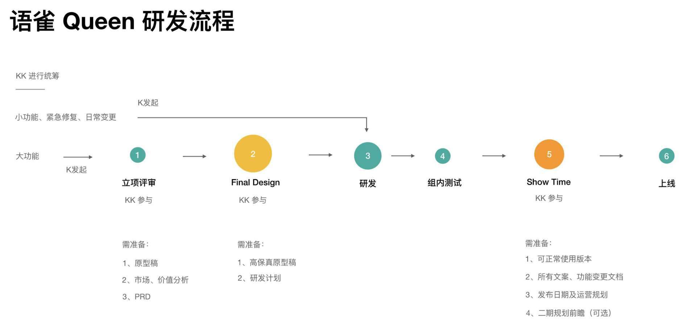

- 00 开篇词 蚂蚁集团玉伯：人生不设限.md.html
- 01 从页面仔到工程师，前端到底在发挥什么价值.md.html
- 02 何为体验：把简单留给用户，也把简单留给自己.md.html
- 03 终端技术：浅谈小程序与客户端的发展.md.html
- 04 开源三大收获：异步协同、文档优先与快乐工作.md.html
- 05 蚂蚁内部开源：迈出第一步，但还有很长路要走.md.html
- 06 从淘宝到支付宝：几次项目失利，但创新产品之心未死.md.html
- 07 产品故事：语雀两度生死局.md.html
- 08 产品经理能力进阶：用户洞察、抽象设计到看到远方.md.html
- 09 个人成长关键词一：全情投入.md.html
- 10 个人成长关键词二：守正出奇.md.html
- 11 个人成长关键词三：愿等花开.md.html
- 12 作为创新产品聚集地，体验技术部成长土壤从何来.md.html
- 13 行业内口碑第一的前端团队，如何打造文化.md.html
- 14 管理能力提升：曾经影响过的书籍和启发过我的人.md.html
- 15 从浆手、掌舵人到兜底人，管理者进阶的三阶段.md.html
- 结束语 我想聊的一些与技术无关的话.md.html
- 捐赠
13 行业内口碑第一的前端团队，如何打造文化
上一节我们提了三个关键词叫“简单、自由、有爱”，这是体验技术部的文化。为什么体验技术部会受到大家的欢迎，除了技术强之外，还有非常强的向心力，我们想了解玉伯所带领的团队是如何践行自己的文化的，这一节我们就继续听玉伯的分享吧。

极客时间：你是怎么理解团队文化的，体验技术部的文化有三个关键词嘛，简单自由有爱，可以讲讲这三个词代表的含义么？
玉伯：谈团队文化，需要先去看一个更大的话题：团队管理。
我们经常会说，管理就是管人理事，可以从业务、组织和人三层去看。业务涉及使命、愿景、战略、规划等等，组织涉及招育用留、排兵布阵、梯队建设等等，业务和组织都是很大的话题，我们这里不展开聊。
除了业务、组织，管理还有很重要的一部分，就是人。人这一层，和文化息息相关，团队需要找到什么样的人，什么样的人在这个团队是被鼓励的等等，文化往往会涉及团队的价值观体系。
回到体验技术部，简单自由有爱的文化倡导，更多是帮助团队在寻找一批类似的人，会逐步成为选人育人用人的标准，长时间去坚持，团队的味道就出来了。
文化要落地，一定不能仅仅是口号。在体验技术部，伴随着简单自由有爱的，更在日常里被大家感知的，是下面的一些土话。比如“真实不装，用专业说话”强调的是简单文化，“要快，但不能急”强调的是长期主义等等。这些土话会在日常会议中被提及，慢慢就会影响大家的日常行为习惯。比如开项目评审会时，有些人不敢说话，我就会提醒“有什么不敢说的，用专业说话就好”，有些土话就会逐步变成日常场景里的一些口头禅，这样就能真实让文化落下去，变成日常点滴。
再举个例子。我们职级是隐藏的，但新人进来时，面对职级可能比他高的人时，会不太敢说话。但在我们团队，会不断强调不是谁职级高他就一定是对的，你在这个岗位上一定有你的专业，你得把你的观点表达出来，不需要去顾虑其他。通过这种方式引导一两次之后，一个新人会受到团队的影响，逐步变得敢说。这就是文化的力量。
极客时间：这让我想到，文化就在这些细节里，文化不是挂在墙上的。
玉伯：对，文化就是日常点滴，日常的行为举止才是文化本身。之前 Lucy（彭蕾）有一句话被传得很广：战略就是客户价值，文化就是言行举止。这句话我之前不太理解，但是后来发现我们自己在做文化的过程中还真是这么回事，文化真的就是你的言行举止。比如说作为一个 Leader，在跟同学沟通过程中，如果每次都说“你来汇报一下”，那种文化就不一样，它传递的信号是一种严明的上下级关系。我们很多时候会说，我们开个会一起讨论一下，脑海里不太会有汇报这个词。
举个例子。“简单文化”里还有句土话是“不要在毛坯房里雕花。这个土话的来源，是当时在做不少创新项目，设计师会去做很多精细化设计，可业务还明显处于 0 到 1 的阶段，这些精细化的设计就像在毛坯房里雕花。我说这不是折腾嘛，你设计得这么细节，花了很大精力，同时前端开发也要跟着花大量精力去实现，本来一起一周能完成的活，要因为雕花变成三周才能完成，可业务想法可能第二周就变了。该粗糙的要粗糙，不是所有阶段都要追求精细化设计的。这个背景下的心得，被总结成了“不要在毛坯房里雕花”，很多同学就记住了，同时会去思考，究竟当前产品是毛坯房，还是精装房。如果是精装房，可以好好雕花，但毛坯房没必要。
还有一句土话是“静水流深”，这跟长期主义、愿等花开一脉相承。所谓静水流深，很多很深的水表面上是波澜不惊，但下面流得很快。很多事情，并不需要在聚光灯下，需要的是坚持去做有价值的事情，然后到了某个点才可能会体现出大价值出来，或者才能够跟某些河流甚至大海汇合。过程中如果太着急，老想翻腾浪花，那可能就做不出来了。这些土话，都是文化。
再聊一句土话：“要快，但不能急”。急的是心态，强调做事的心态不能急，心态一急很多事情就会搞糟。要快，指的是要有整体规划节奏，要有条不紊、有节奏地去推进事情。在求快的整个过程中，要保持心不毛躁，心是平静的、稳的。这其实挺难，更多我们是通过这句土话，去提醒自己不要心急，这是用来反思自己心态的一个好工具。
这些土话，会每年迭代升级，每一年都有增加或删减。比如说你看这个图里一些标红的“土话”，像“敢说真话，说话和气”，就是前年增加的。当时因为团队里的文化太自由、太简单，大家有时候就会跟合作方怼，因此我们老被投诉，我们就感觉好像这个文化稍微有点偏离初心。怼完合作方后，我们同学是爽了，但是对方同学就会觉得玉伯团队怎么这么有个性，怎么一个个都像长了毛刺一样？那段时间觉得非常不对，于是增加了“说话和气”这条土话，一方面会继续强调要敢说真话，同时一方面强调一定要说话和气，要有爱。“说话和气”挺有意思，最早是在八路军的三大纪律八项注意里看见的，这是当年军队的一条重要注意事项，非常有意思。
通过土话来做文化，这是我在做团队文化时，觉得最有意思的一个点。这在很多管理书籍里面是看不到的。大家可以尝试用用，会有不一样的收获。
极客时间：这种标语很多公司也都会做，但也许就停留在宣扬标语上，但听你也说了很多实践案例，感觉你们是在日常中大家用实际行动去说明文化到底是什么，可以这样理解么？
玉伯：对的，更多是靠日常的会议、讨论等各种环节里去强调的。
每个管理者在日常中的以身作则是关键，还有一个很重要的点是，我们每个季度会有一个叫“海阔天空”的全员大会，在这个会上，我会每次都强调下团队文化，特别是对增加或删减的土话。同时在新人圆桌等环节，也会带带货，把一些文化理解通过案例传递给新同学。
极客时间：我突然有这样一个感受，你们所说的文化很多时候来自团队中真实遇到的痛点，解决这些痛点的办法就是提倡的文化本身，你们把它总结出来，在各种场合去重复，最终把它沉淀为一些词，那另外，会不会有这样一个现象，因为团队同学想法太一致了，会导致看不惯别人的东西。会有这样的感受么？就像别人说过的“怎么感觉玉伯团队的人像长了毛刺一样”。
玉伯：这个现象也很有意思，我去研究过，这种现象叫做文化的反噬。
比如过于强调简单和自由，很多 Leader 或同学潜意识就会偷懒，比如遇到困难时，会说“怎么办呢？我就是这么一个简单的人”，会用文化来帮自己开脱，这就是文化的反噬。
意识到每个词都有两面性时，我有开始思考，究竟怎样的文化倡导是好的。后来就会有意去研究组织文化的书籍。很幸运很早年就看到了一本很好的书，叫《奈飞文化手册》，中间谈到了自由，但提法是自由与责任。这个提法，让我恍然大悟，突然就知道如何去让简单自由有爱更合理了。
具体做法就是，把简单、自由、有爱当成三枚硬币，硬币都有正反面。正反面的存在，共同组成了一枚硬币。因此当年仔细研究后，会把简单的背面刻上了专业两个字，自由的背面是责任，有爱的背面则是行动。具体含义也很好理解，比如简单的背后一定不是复杂，我们花了一点时间求证，最后发现专业才是简单的背面，因为足够专业才能把事情做得简单。自由的背后是责任，强调的是敬畏之心，是责任意识，特别是在支付宝，支付和金融，对责任心的要求很高。有爱的背后是行动，因为不能老谈有爱，但啥行动都没有。这也会落到一些管理的要求上，比如管理者如果想让团队同学工作更快乐一些，这个目标的达成，一定是看具体行动的。
通过硬币的比喻，就把原来的三个词，扩充到了互为关联的六个词。大家也很容易记住，同时看问题会变成更综合。经过这次升级后，文化的反噬就会少很多。
文化往往会显得很虚，哪怕转化成很多土话后，依旧很容易被看成是虚的。文化真的要落地，必须要有一些非常实在的具体的措施。
比如有段时间，我会要求每个 Leader 每个月要跟下面至少 5 个同学面对面沟通一次，沟通时一定要关注到同学有什么困难，关注到同学可能希望获得什么样的帮助。这个具体要求，在做的是“有爱”这条文化的落地。一个主管不能满眼只是事，同学有什么心结，遇到了什么困难，如果一个主管什么都没感知，很多时候是带不好兵的。
极客时间：你们一些会议、活动的命名也挺有意思的，比如海阔天空、策马扬鞭这类词。之前咱们聊到做产品内部需求评审的时候，你们还有一个叫 KK 制的流程，“KK”代表什么，需求评审怎么运作，可以展开聊聊么？

玉伯：“KK 制”是语雀在用的项目管理机制，K 就是 King 的意思，K 就是小王，KK 就是大王。大王是指业务负责人、产品负责人、技术负责人和运营负责人。语雀里面分不同产品线，一条产品线会有一个 King 在负责的，他会去组织这个产品线的需求讨论和评审。在正式研发前整个流程分几个环节，叫“QT-QD-FD”。
第一个环节叫做 QT（QuickTalk），假如我们要做某个功能或者来自用户的某个反馈要变成需求，负责的人会先把文档（包括背景+解决方案）写好，快速讨论这个想法要不要去做。会一起确认这个需求是不是靠谱的，QT 环节有时候会来来回回好几次。
QT 结束之后，会有一个快速决策环节，叫做 QD（Quick Decision），需要确定这个需求究竟是否要做。这个时候除了小王之外，大王也会来参与。我们需要判断 QT 讨论出的版本，回答出两个问题：该不该做？是不是现在做？包括是否符合我们产品定位、是否真的在解当前的业务痛点，以及优先级怎么样。
QD 之后第三个环节是 FD（Final Decision），要做详细评审了。因为 QD 很多时候只是一篇文档，是一个非常粗的解决方案，还没有设计稿，PRD 也没写，很多地方还只是一个想法。到了 FD 的环节， PRD，设计稿都要具备的。一般 FD 一次过关的很少，也会反反复复不断探讨之后 FD 才能通过。
在 FD 通过之后就开始进入了常规的研发环节，研发环节之后测试上线。然后在上线之前我们有一个特色，叫做 Showtime，一个全民测试环节，把大家都调动起来，就是快要上线了大家一起来测一测。会测出一些 Bug，修完再上线。
极客时间：这个 King 小王一般是什么样的一个角色来承担？
玉伯：目前来说会以产品经理为主，之前技术人员也尝试担当过，会鼓励同学自主担当。我们不太看角色分工，强调的是用专业说话，不是看谁的声调高，而是看谁说的话有道理。
极客时间：这几个环节里面你会主要参与哪几个？
玉伯：我其实核心参与的是 Final Design，有时间的话会参与 Showtime。我更关注的是上线之后用户的反馈。
极客时间：这个 KK 制只在你们团队还是说蚂蚁都用这一套？
玉伯：这是语雀特有的。因为公司那套流程是特别规范的，比如有 PMO 这个角色，专门做项目管理，语雀没有，所以就设置 K 来做项目管理。语雀是一个全功能型的创业团队，是完全自闭环的。从运营、产品、设计师到前后端，这些角色全在一个团队，这套规则是这个团队自己找出来的。
我们总得去找一套流程，最早期也去试过公司那套流程，发现不适用。比如说支付宝的项目流程里面有 CP0、CP1 的说法，就是设置 Checkpoint 检查点，这些检查点需要有业务一号位、技术一号位、质量一号位达成一致才能通过，这个流程非常重，如果套在语雀身上，并不合适。
后来我发现其他团队也在借鉴我们的做法，他们也开始有 FD 环节。内部有不少团队对语雀怎么从 0 到 1，怎么创业很感兴趣。我在内部做过一些分享，慢慢就会把一些做法传播出去。
小结时刻
今天我们聊了打造团队文化的话题，策马扬鞭、海阔天空、KK这些词让我印象深刻，总结起来，最重要的一句话应该就是“文化就是日常点滴”。最后想和你讨论，你们的团队文化是什么？你认可么？欢迎在评论区留言，我们下期再见。
© 2019 - 2023 Liangliang Lee. Powered by gin and hexo-theme-book.